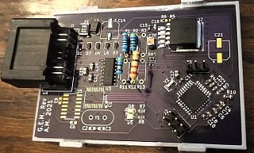
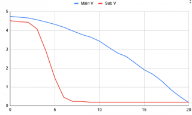

-
After I have the prototype working, then I'll start looking having some PCBs and enclosures made.
How much interest would there be in a drop-in replacement like this? And would people want to have factory connectors, or would people be OK with splicing in non-standard aftermarket connectors for use with this adapter box?
If interested, how much would you be willing to pay for one of these? Nissan had the factory adapters listed at $85, IIRC. It looks like I could probably have a run of these made and sell them for a bit less than that, depending on how much the connectors cost (factory connectors may drive the price up). Of course, the smaller the run, the higher the price per unit.
I managed to track down part numbers for the 4-pin connectors that Nissan used for these senders. They were made by either Sumitomo or Yazaki - they're 58 series S-type connectors. I believe Nissan classifies them as "S04FW" (s-type, 4-pin, female, white) and "S04MB" (s-type, 4-pin, male, blue). Unfortunately, they appear to be hard to find items. I have only found one distributor that has any in stock, and they don't quote a price on their site.
Obviously, it would be ideal to use factory connectors - that way, this would be a 2 minute drop-in job - but if that isn't feasible due to availability of the connectors, then it may have to be a splice-your-own deal. -
Great write up. I would be interested in one when you get something working.... I have a analog sending unit and a digital dash. Dale-
 #17.1macanic commentedI have an 84 Z, digital. Are you using the analog cylinder sensor or a 2 float unit in your car, I am having terrible success with digital level sensors.
#17.1macanic commentedI have an 84 Z, digital. Are you using the analog cylinder sensor or a 2 float unit in your car, I am having terrible success with digital level sensors. -
I'll be using the float-based analog unit, but it will work with either (the two analog sender designs are electrically identical).
-
-
Same here… I would be interested in one. Don't mind paying OEM price for it. Keep up the good work. We need more people like you to keep the Z31 running -
Update on progress:
I got a breadboarded proof of concept working. Then the project got shelved for a while. Now I'm back at it.
Components for a functional prototype are on order. Next step is to chart fuel volume in the tank vs sender level and then start building once components arrive. I plan to run with one of these units installed in my Z for a while before committing to the design and ordering components for a production run. -
I followed this thread last year, hoping that the project would take place. I have an 87T GLL with a bad sending unit. I'd like to drop in an analog sending unit, as you describe. Since this is an essential part, I'd be willing to pay OEM pricing as well.
Looking forward to more updates! -
My fuel gauge isn't working and I suspect the box to be the issue. I'd be willing to buy one when they're ready. -
Time for some thread necromancy…
I started work on this 18 months ago with some help from Z_Karma, who fully characterized several digital fuel level sending units and an updated analog level sending unit. His results are here:
https://github.com/Z-Karma/Z31-fuel-…racterization/
I designed a board to perform measurements and actually convert the level values, something the Nissan box does not do. I then set the project down for 16 months because I couldn't be bothered to actually write the code. Today I finished writing the code and checking out the level input calculation:
This is on the bench with known value resistors, at 47.5 and 218 Ohms for the main and sub level, respectively. The quantity lookup table is working correctly, as the calculated resistance values match the characterized values for the indicated level values.Code:Heartbeat AVR Volts:4.47 Supply Volts:4.87 Main Level Counts: 308 Reading (Ohm): 46.88 Level (Gal): 5.69 Sub Level Counts: 491 Reading (Ohm): 219.04 Level (Gal): 7.63
My remaining task is to include the output code (PWM between 4.5 and 0.5V depending on calculated level), crimp up a wiring harness to install it in the car, and finally perform a couple months of aimless driving (sorry, extended testing). Rev 2 of the board is already in work, to correct some poor component and layout choices.
I intended this to be a highly flexible general utility board, so it's got three analog inputs, four low-side PWM outputs, and CAN communication provisions.
Forgive the terrible quality assembly, I've gotten better footprints and soldering technique since I put this together.
 -
It's in the car now. Some time ago I measured the stock "converter" box as a constant 14mA draw, pretty tough on the old electrical systems for cars that don't get driven. Well, this one shuts off entirely when the ignition is off and waits for the cluster sense voltages before powering up. That all works nicely so far.
Output map is initially a simple linear interpolation: main 0-19gal is 4.7V-0.5V; sub 0-6gal is 4.5-0.5V. The output map should be another LUT since the cluster is (probably) expecting a nonlinear voltage based on the attached curves. However, it's already more accurate than it was so I'll run this for a little while to see if it's worth the effort to upgrade the code. -
Eventually it would be cool to characterize a fuel level sender that is still readily available that could be adapted to the stock Z31 fuel sender tank plate (though it only has the 4 wire pass thru points and no bracketry to speak of.
Reason being: I bought a 25060-17P65 analog sender for ~210USD in June of 2022 from Amazon, they are now at 361USD.
For the sake of keeping it Nissan, a 25060-ZS00B, it appears to have dual resistance strips on a single float.
Maybe a piece of erector set for a adapter bracket .
I should have maybe kept my old rusty tank for a mock-up.
84 AE/Shiro #683/Shiro #820/84 Turbo -
25060-17P65 was ~$230 November 2021 when I ordered mine. They still seem to be in production judging by the date on my box, though. note that 25060-ZS00B is a single wipe, they just doubled up the track to get the sensitivity range they wanted. The dual float is nice to have but not really relevant since we can let one capacity measurement drive both outputs on different scales.
What I want is a capacitive level sensor. No moving parts, easy fabrication, just electronics and math. Calibration for a roll-your-own is a pain though, and commercial parts are $$$. Japan-market digital-dash Leopards used a rather complex capacitive plate arrangement to accurately detect fuel level at any orientation. The internet claims the Ford Falcon ("XF") used a PCB-based capacitive sensor. They're also everywhere in aviation, just a lot more of them per vehicle.Last edited by Acmex; 09-14-2022, 10:57 PM.

Copyright © 2006–. All rights reserved. Privacy Policy
Comment